AMDEUNG FILM LAB · 서울 중구
암등 현상소
컬러 네거티브·흑백·슬라이드 필름을 현상하고 스캔해요. 필름마다 현상 방식, 해상도, 가격, 작업 일수를 밝혀 둬요.
- C-41
- 2영업일
- 흑백
- 4영업일
- E-6
- 6영업일
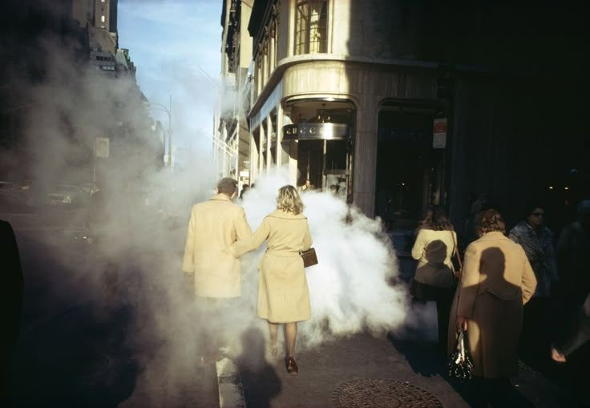
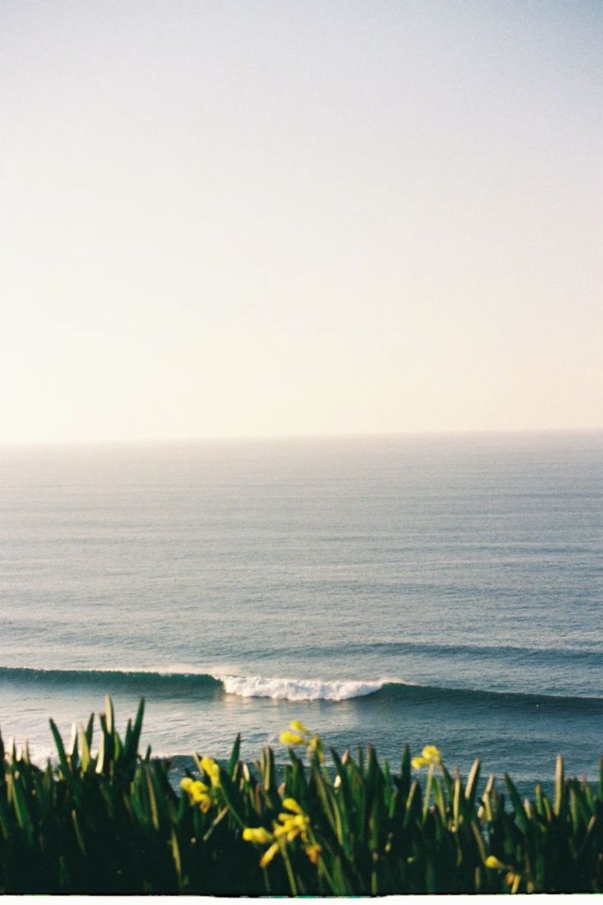

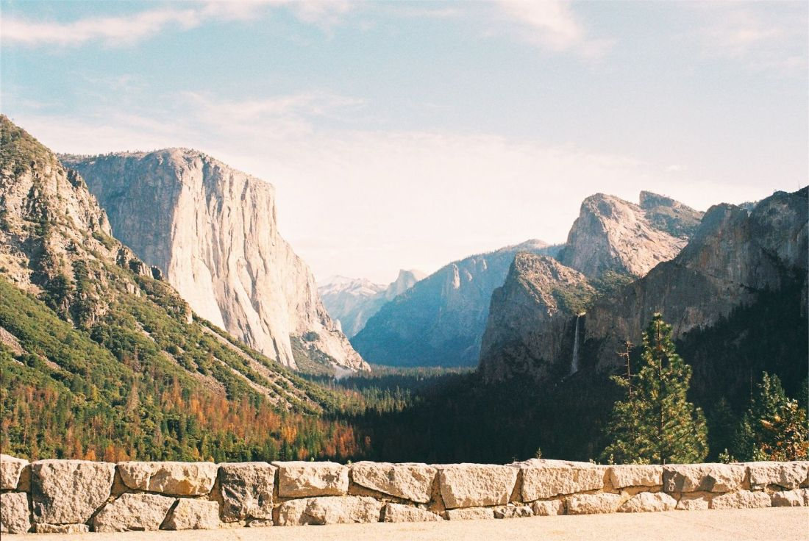
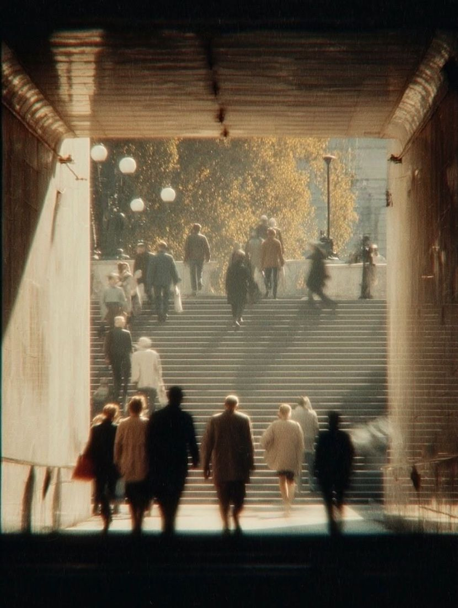
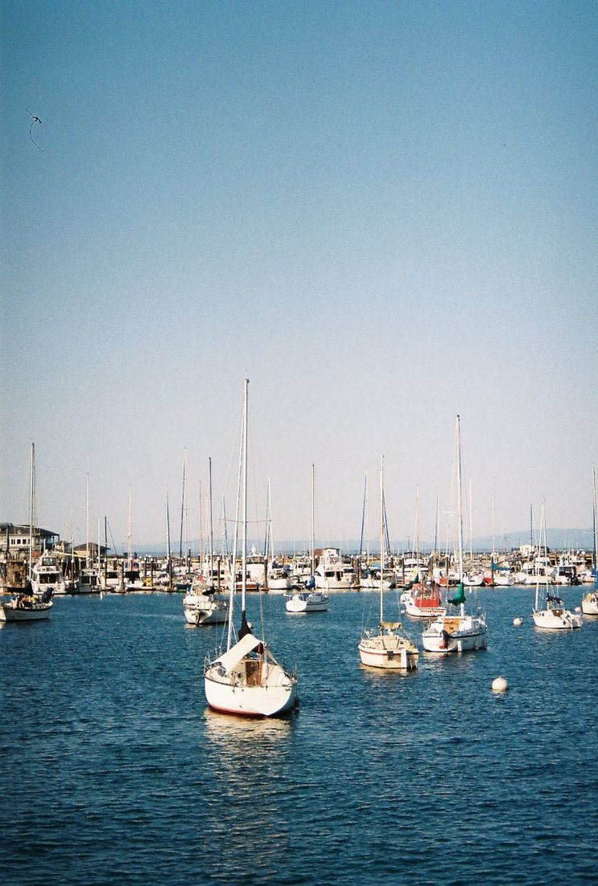

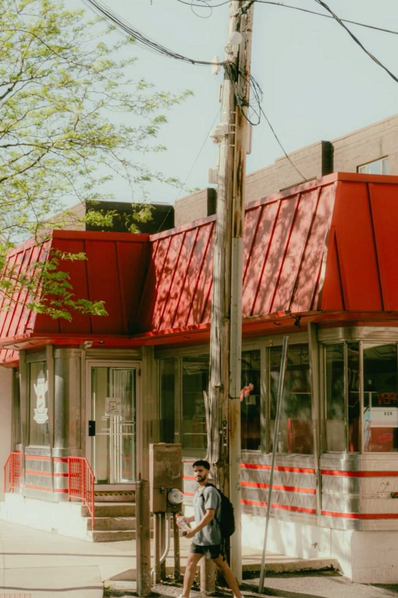
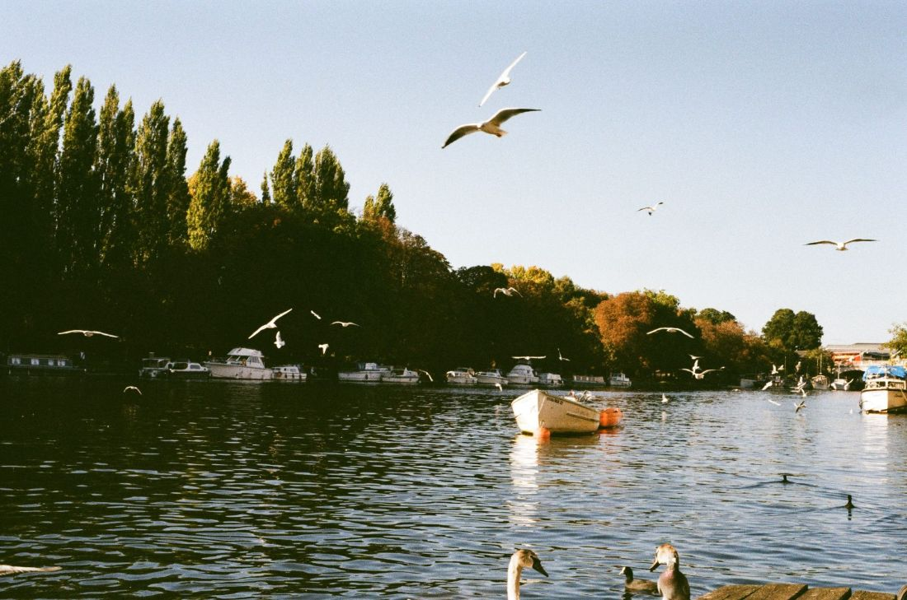
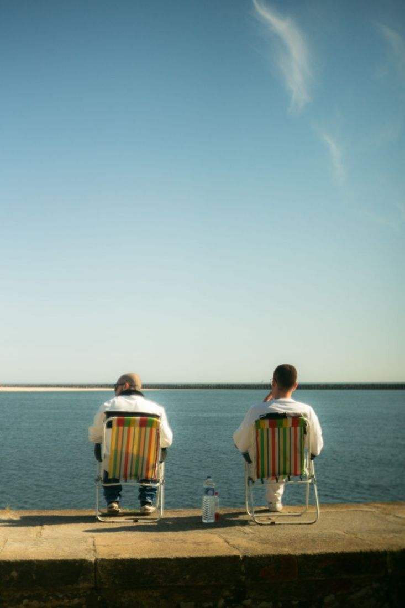

현상 방식
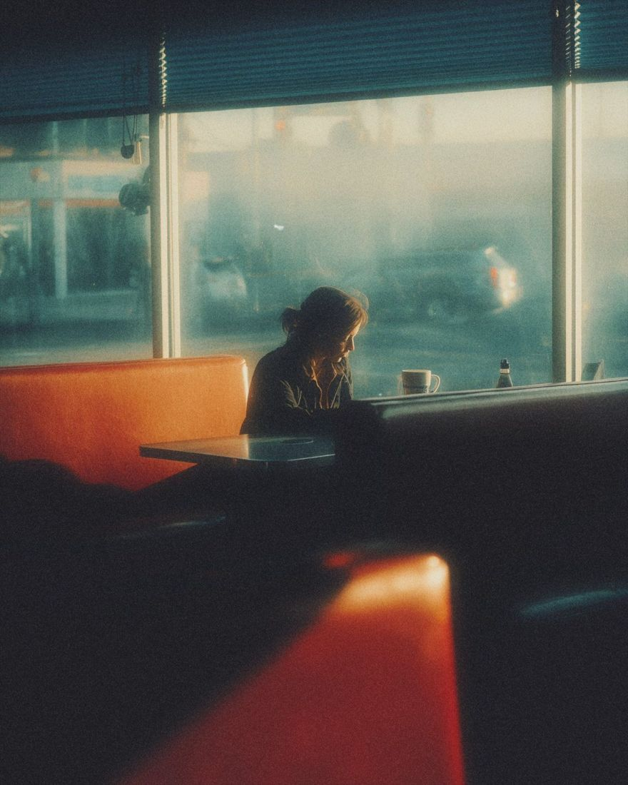

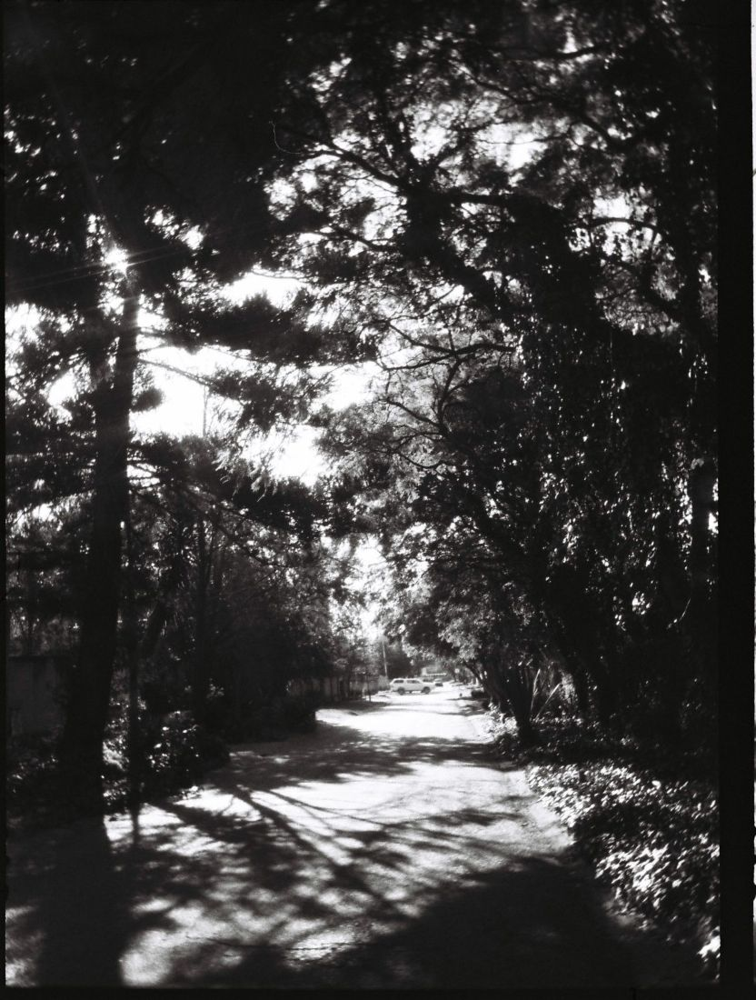
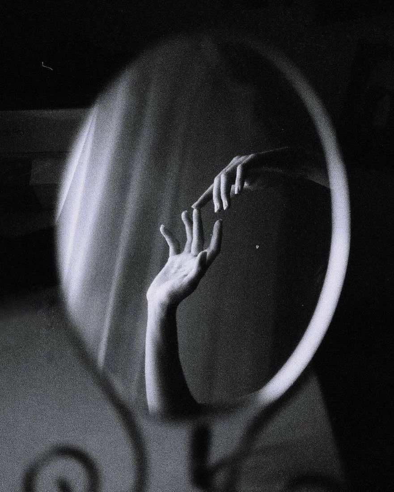
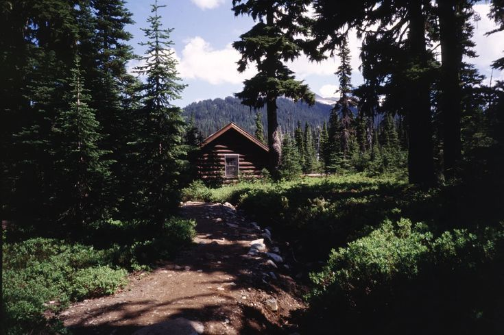
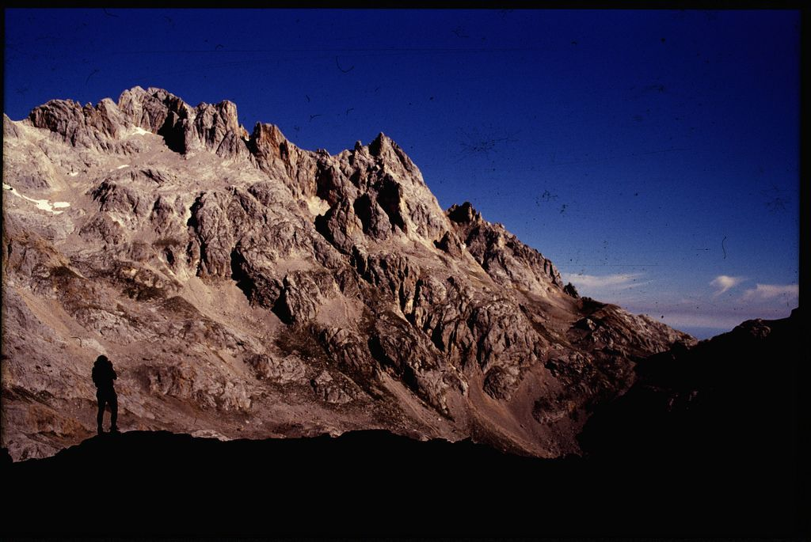
- 약품 온도
- 38℃
- 1차 현상
- 6분
- 반전
- 2분
- 발색 현상
- 6분
- 표백·정착
- 10분
- 작업 일수
- 6영업일
- 현상만
- 35mm 12,000원 · 120 13,000원
약품을 화요일과 금요일에만 돌려요.
오늘 작업
9월 30일 수요일 15:00 기준
- 접수18롤오늘 들어온 롤
- 현상11롤C-41 7 · 흑백 4
- 스캔9롤표준 5 · 고해상 3 · 최대 1
- 발송14롤택배 10 · 방문 4